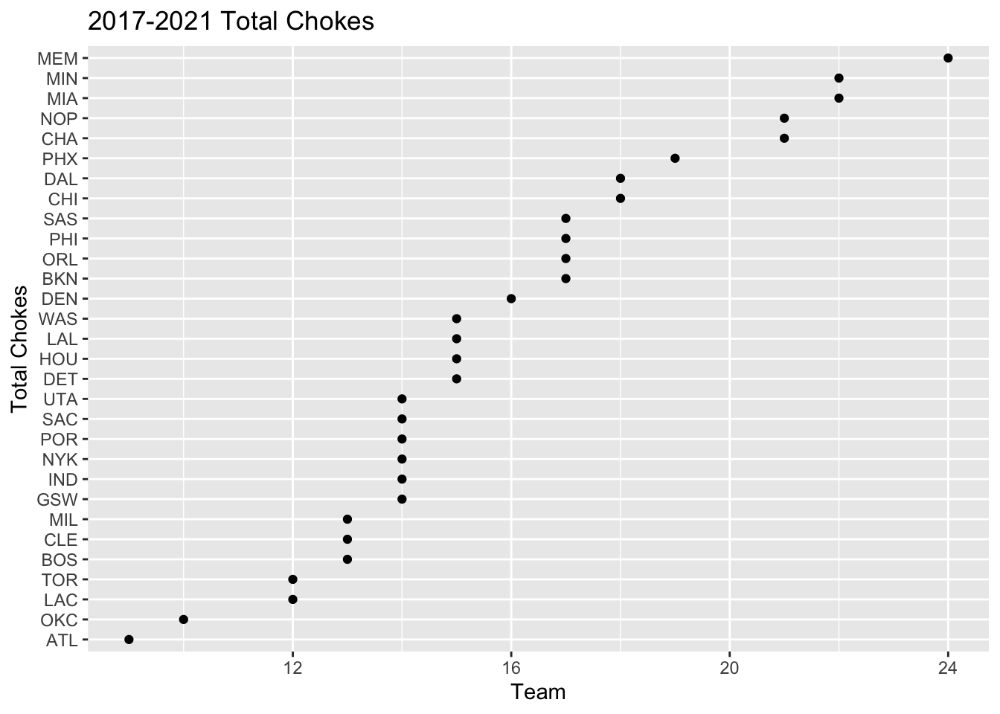
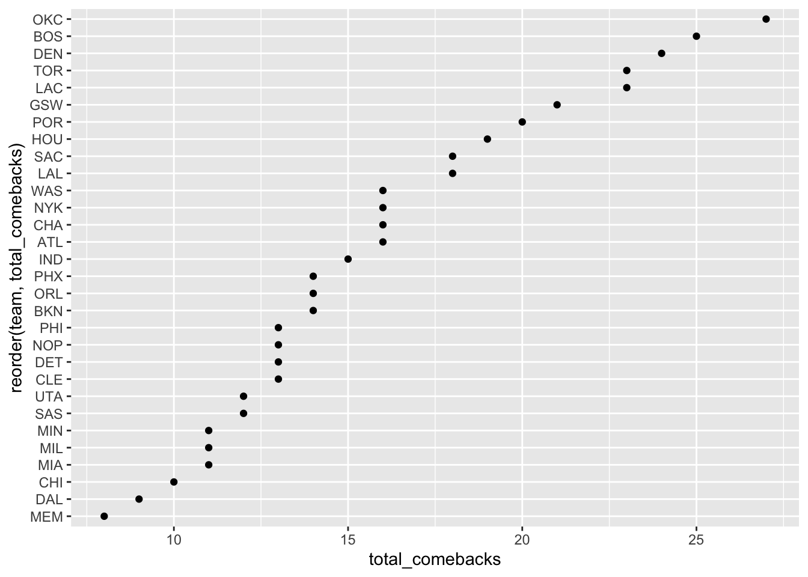
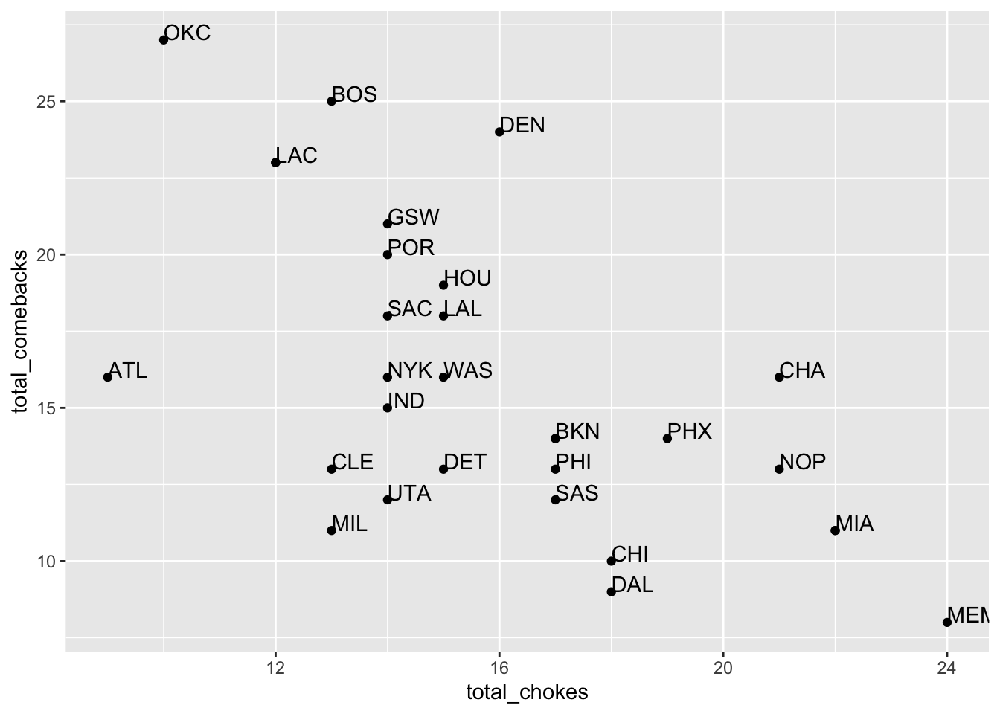
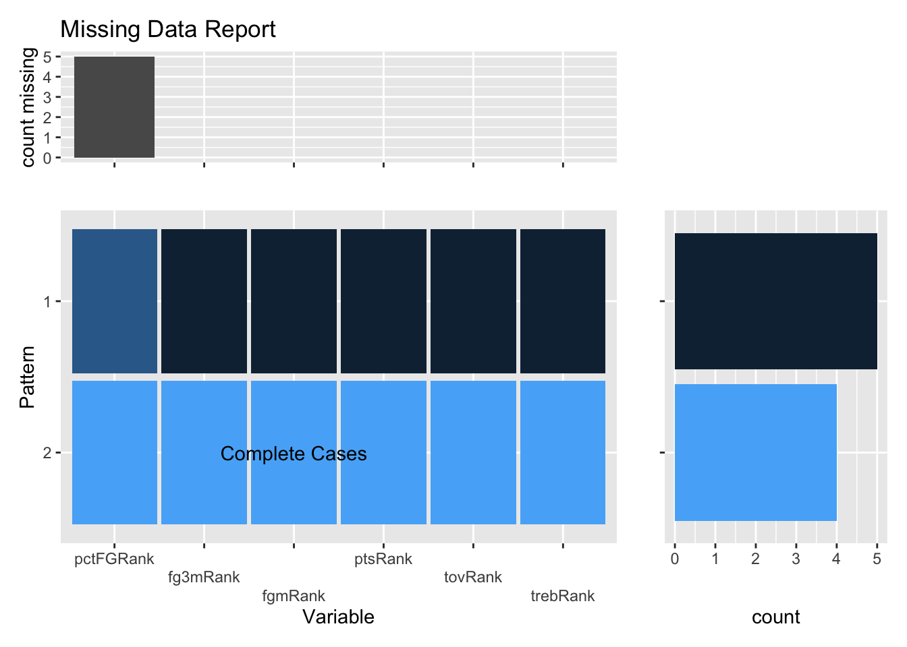
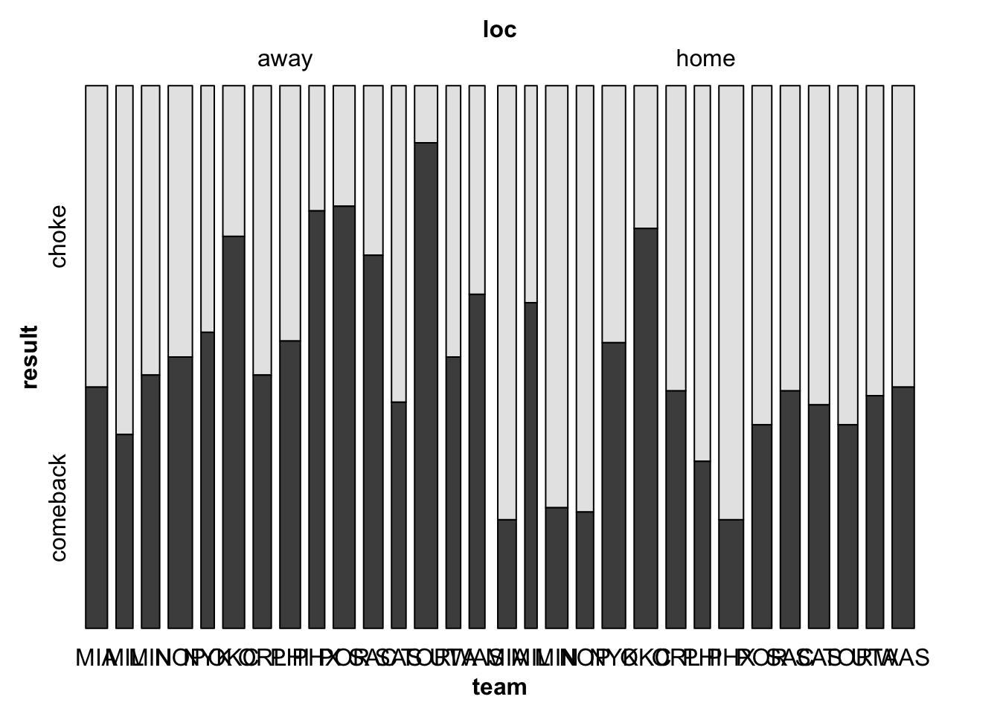
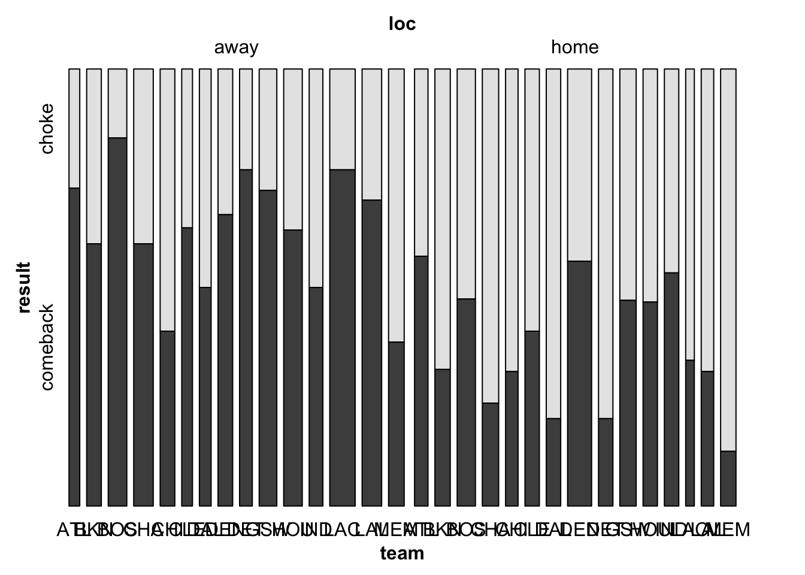
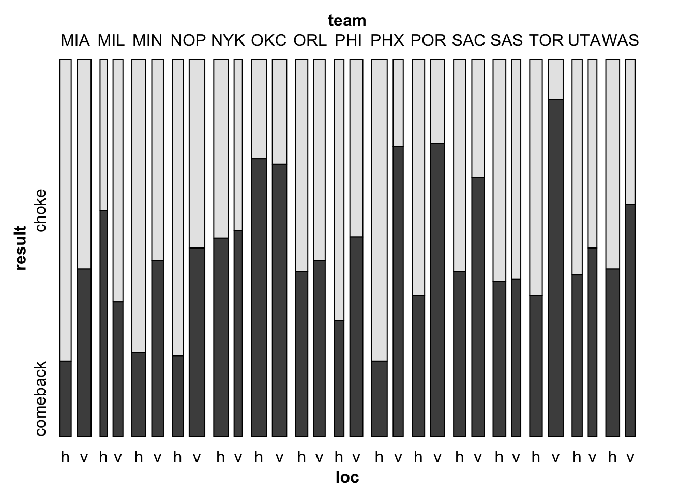

Chapter 5 Results
To begin our analysis, it seemed logical to first gain a sense of which teams have recorded the most total chokes, as well as comebacks over the last 4 seasons. As a result, we used a Cleveland Dot plot to display a ranking of these teams.
##Total Chokes and Comebacks

It is interesting to note here initially the top 5 choke teams as: Memphis, Minnesota, Miami, New Orleans, Charlotte and the top 5 comeback teams as Oklahoma City, Boston, Denver, Toronto and Los Angeles. We will use these teams in a moment to further explore the possible relationships between high choke / comeback teams and other variables.
##Choke and Comeback Relationship
Further, it should be noted that being a high-comeback team and being a high-choke team are not entirely mutually exclusive. This initial data visualization showed that it is possible that a team can very well lie in both categories. A team can be simply extremely volatile (or stable) once they have secured a 90% (or fallen to a 10%) win probability, however the direction of that volatility is not consistent. Although there is no overlap within the top 5 teams in each category, it would be useful to determine if certain teams are just extremely volatile in both direction, given a sizable lead or disadvantage.

Some interesting findings from this scatter plot is that there are indeed some teams with notable volatility (and stability) in their game play. For instance, Charlotte, a team we already identified to be within the top 5 choke teams also has a sizable number of comebacks. Further, Denver, a team that ranked in the top 5 comeback teams, was also within the top half of choke-prone teams. As a result, these two teams stand out in that for both of them, they stand out, relative to the rest of the league, in that their games often result in improbable endings, for better and for worse. Therefore, it would be of interest to investigate further aspects of these teams that cause them to stand out as improbable ending prone teams. Additionally, it was not surprising to notice that the number 1 team in both chokes and comebacks, MEM and OKC respectively, both ranked among the lowest in their respective opposite category.
##Home v. Visitor impact on Choke v. Comeback
Given these top teams in both choke and comeback categories, we wanted to investigate whether or not being the home vs. visitor team was a significant determinant of the outcome of the game. In the sports community, it is often known that home teams typically have a slight advantage, however, we wanted to investigate the nuances of this advantage at the choke/comeback level. For all teams across the league, we have produced mosaic plots to get a visual representation of this potential relationship. We split the league in half, by alphabetical order just to have the graph not be overly crowded and to view the relationship more clearly.

As we can see from the following two mosaic plots, some teams exhibit significant differences between their number of chokes and comebacks when they are home vs. when they are a visitor. What was most surprising from this visualization was that a vast majority of teams have a much higher comeback rate when they are a visitor. While most teams have this trend, teams such as DER and TOR show a strong positive relationship between them experiencing a comeback and being a visitor team. Perhaps a logical explanation for this finding is that home teams can do a better job of starting the game off strong, using the crowd and familiar environment to their advantage. As a result, many of the instances of comebacks for a team occur when they are a visitor, simply due to the fact that a home team has a better chance of gaining an early lead. On the flip side, for these same teams, they had much more chokes as home teams than as visitors. Along the same logic, this can likely be interpreted as home teams having the advantage of starting off a game very strong, but as a result, lends itself to the possibility of a choke in the latter part of the game. This finding was extremely curious to us since it caused us to question the true nature of having home-court advantage. However, given that this dataset is only considering the games that had a choke/comeback ending, this seemingly contradictory relationship is actually quite logical.
##Reasons for Choke, split by Home v. Away
Now, given that there is some explanatory connection between being home vs. away and the outcome of a team’s game, we wanted to leverage the play-by-play data to see the most frequent events in a game that resulted in a choke. This analysis would enable us to assign a single cause to a choke instance and then examine holistically which of these causes are most common, split by home chokes vs. away chokes. We decided that a fair metric to determine the single cause for a choke would be to identify the event with the maximum standardized frequency. As mentioned earlier, the main 3 mistakes that a team makes which leads them to a choke include: misses, fouls and turnovers. However, it would be naive to simply count the frequencies of these events in a choke and then assign the event with the largest count to be the explanatory mistake. This is because in a game, naturally some of these events will occur more often than others, regardless of the final game outcome. To fix this, we looked at the ratio of the counts of each mistake, relative to the total league averages. We obtained these league averages from this website. (https://www.basketball-reference.com/leagues/NBA_stats_per_game.html). Since we standardized the frequencies of each mistake to the average, we can then identify the mistakes that occurred at the largest multiple, against the league average. As an example, if the number of fouls in a game is around 10, if a team commits 20 fouls, it is likely that since they committed 2x of the league average, their abundance of fouls was the main contributor for their choke. We used a bar chart to display the distribution of games that has misses, fouls or turnovers as their main explanatory variable.

As we can see here, the clear leading cause for both home and away chokes are turnovers. However, for home chokes, misses are more frequent than fouls, but the opposite is true for away chokes.